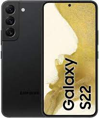

|

|
Samsung Galaxy S22 5G Dual SIM 256GB 8GB RAM SM-S901B/DS
727.00€
Omrežje:
Tehnologija:
GSM / CDMA / HSPA / EVDO / LTE / 5G
2G pasovi:
GSM 850 / 900 / 1800 / 1900 SIM 1 & SIM 2
3G pasovi:
HSDPA 850/900/1700 (AWS) / 1900/2100
Hitrost:
HSPA 42, 2 / 5, 76 Mbps, LTE-A (7CA) Cat20 2000/200 Mbps; 5G (5+ Gbps DL)
SA/NSA/Sub6/mmWave ZDA
5G:
1, 2, 3, 5, 7, 8, 12, 20, 25, 28, 38, 40, 41, 66, 75, 77, 78 SA/NSA/Sub6
4G pasovi:
1, 2, 3, 4, 5, 7, 8, 12, 13, 17, 18, 19, 20, 25, 26, 28, 32, 38, 39, 40, 41, 66
Začetek prodaje:
Napovedan:
2022, 09. februar
Status:
Na voljo. Izdano 2022, 25. februarja
Telo:
Dimenzije:
146 x 70.6 x 7.6 mm
Teža:
167 g
IP68 odporen na prah/vodo (do 1, 5 m za 30 minut) Okvir iz aluminija z močnejšo odpornostjo na padce in praske (oglašano)
Zgradba:
Steklena sprednja stran (Gorilla Glass Victus), steklena zadnja (Gorilla Glass Victus), aluminijast okvir
SIM:
Dual SIM (2 Nano-SIM + eSIM, dvojno stanje pripravljenosti)
Zaslon:
Vrsta:
Dinamični AMOLED 2X, 120Hz, HDR10 +, 1300 nits (vrh)
Velikost:
6, 1 palca, 90, 1 cm2 (~87, 4 % razmerje med zaslonom in telesom)
Vedno, na zaslonu
Zaščita:
Corning Gorilla Glass Victus
Resolucija:
1080 x 2340 slikovnih pik, razmerje 19, 5:9 (~425 ppi gostota)
Platforma:
OS:
Android 12, One UI 4.1
Chipset:
Exynos 2200 (4 nm)
CPU:
Osemjedrni (1x2, 8 GHz Cortex-X2 & 3x2, 50 GHz Cortex-A710 & 4x1, 8 GHz Cortex-A510)
GPU:
Xclipse 920
Spomin:
Reža za kartice:
Ne
Notranji:
256 GB, 8 GB RAM
UFS 3.1
Zvok:
Zvočnik:
Da, s stereo zvočniki
3,5 mm jack:
Ne
32-bitni / 384kHz zvok Tuned AKG
Comms:
WLAN:
Wi-Fi 802.11 a / b / g / n / ac / 6, dvopojasni, Wi-Fi Direct, dostopna točka
Bluetooth:
5, 2, A2DP, LE
GPS:
Da, z A-GPS, GLONASS, BDS, GALILEO
Radio:
Ne
USB:
USB Type-C 3.2, USB na poti
NFC:
Da
Lastnosti:
Senzorji:
Prstni odtis (pod zaslonom, ultrazvok), merilnik pospeška, žiroskop, bližina, kompas, barometer
Samsung DeX, Samsung Wireless DeX (podpora za namizje) Ukazi naravnega jezika Bixby in narekovanje Samsung Pay (certificirano Visa, MasterCard)
Baterija:
Polnjenje:
Hitro polnjenje 25W, USB Power Delivery 3.0, hitro brezžično polnjenje Qi / PMA 15W, povratno brezžično polnjenje 4, 5W
Vrsta:
Li-Ion 3700 mAh, ni odstranljiv
Glavna kamera:
Lastnosti:
LED bliskavica, samodejna HDR, panorama
Video:
8K @ 24fps, 4K @ 30 / 60fps, 1080p @ 30/60 / 240fps, 720p @ 960fps, HDR10 +, stereo zvok, žiro-EIS
Triple:
50 MP, f/1.8, 23 mm (širok), 1/1.56", 1.0µm, Dual Pixel PDAF, OIS 10 MP, f/2.4, 70 mm (telefoto), 1/3.94", 1.0µm, PDAF, OIS, 3x optični zoom 12 MP, f/2, 2, 13 mm, 120˚ (ultrawide), 1/2, 55" 1, 4µm, Super Steady video
Selfie kamera:
Ena:
10 MP, f/2, 2, 26 mm (široko), 1/3, 24
Video:
4K @ 30 / 60fps, 1080p @ 30fps
Lastnosti:
Dvojni video klic, Auto-HDR
|